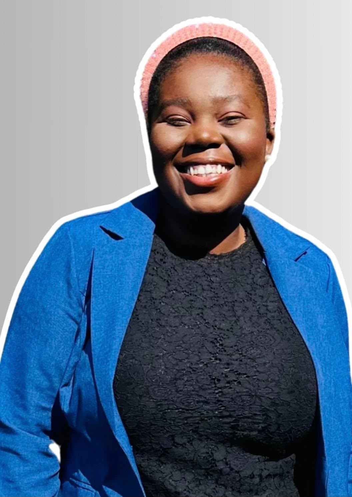
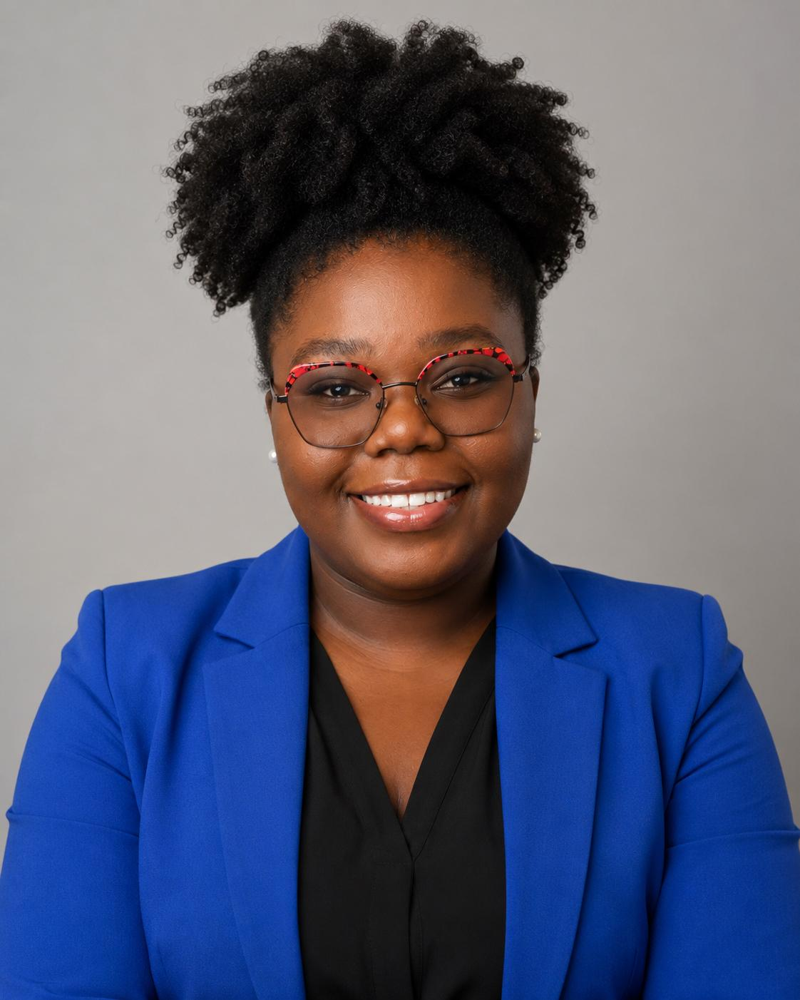

Révéler les singularités
Je crois profondément que chaque être humain possède une lumière qui lui est propre. Une lumière parfois éclipsée par les épreuves, les discriminations, les conflits, les inégalités ou les circonstances de la vie. Pourtant, lorsqu'elle est reconnue, accompagnée et valorisée, cette singularité devient une force capable de transformer une trajectoire, une organisation et, parfois même, une société.
Mon parcours, entre la République démocratique du Congo et la France, m'a amenée à rencontrer des personnes dont les histoires ont profondément marqué ma manière de voir le monde. Ces rencontres m'ont appris qu'au-delà des différences culturelles, sociales ou générationnelles, les besoins fondamentaux restent les mêmes : être écouté, être respecté, pouvoir agir et trouver sa place.
À travers la communication, la formation, l'accompagnement de projets, la sensibilisation et la coopération entre les acteurs, je souhaite contribuer à construire des environnements où chacun peut développer son potentiel et participer pleinement à la vie collective.
Je ne considère pas la communication comme un simple outil de diffusion. Je la considère comme un levier de compréhension, de dialogue et de transformation sociale. Parce que je suis convaincue que révéler une singularité, c'est permettre à une lumière de rayonner. Et qu'ensemble, ces lumières peuvent transformer notre avenir commun.

Les origines d'une conviction
Je suis née à Kinshasa, en République démocratique du Congo, quelques mois après la première guerre du Congo, cinq mois après l'entrée de l'AFDL. Très tôt, j'ai compris que derrière les statistiques et les grands discours se trouvaient des vies, des familles et des rêves.
En 2015, alors que je descendais d'un bus à l'entrée de l'Université de Kinshasa, j'ai aperçu un petit garçon d'environ huit ans qui vendait des bouteilles d'eau au bord de la route, un jour d'école. Je ne lui ai jamais parlé. Mais je n'ai jamais oublié son regard. En rentrant chez moi, une question ne m'a plus quittée : que puis-je faire, à mon échelle, pour que des enfants comme lui aient d'autres perspectives ? C'est cette interrogation qui m'a conduite vers mon premier engagement associatif, au sein de Young for Young.
Quelques années plus tard, des situations de harcèlement sexuel auxquelles j'ai été confrontée m'ont amenée à m'engager davantage pour les droits des femmes et la promotion d'un leadership féminin responsable, au sein de Forêt des Femmes Leaders.
En arrivant en France, une expérience de discrimination vécue au cours de ma première année d'université est venue bouleverser ma certitude que seules les compétences feraient la différence. Cette expérience, aussi douloureuse ait-elle été, n'a pas nourri de ressentiment : elle m'a donné la volonté de contribuer à créer des environnements où chacun est accueilli avec dignité, quelles que soient son origine, son parcours ou sa singularité.

Trois valeurs, une ligne directrice
Ma conviction
- Chaque personne possède une singularité qui, reconnue et accompagnée, devient une force
- Au-delà des différences, les mêmes besoins : être écouté, respecté, pouvoir agir
Comment cela se traduit
- Communication pensée comme un levier de dialogue, pas seulement de diffusion
- Accompagnement individualisé, adapté à chaque personnalité
Ce que je ne fais pas
- Réduire l'accompagnement à une réponse technique plutôt qu'humaine
Ce vers quoi je travaille
Je souhaite poursuivre mon parcours au sein d'organisations nationales et internationales engagées dans ces domaines, en contribuant à la conception, au pilotage et à l'évaluation de politiques publiques et de projets favorisant l'émancipation des personnes et le renforcement de la résilience des communautés.
Éducation
Protection de l'enfance
Droits humains
Inclusion
Prévention des conflits
Communication publique
Développement international
Terrain + recherche + communication + conception de projets
Les langues m'ont appris à créer des passerelles. La communication m'a appris à comprendre les discours. La communication publique m'a appris à comprendre les organisations. Le terrain m'a appris à comprendre les personnes.
Aujourd'hui, ces quatre dimensions se rejoignent dans une même approche : accompagner les acteurs qui souhaitent construire des projets plus inclusifs, plus justes et plus humains.
Voir comment cela se traduit en projets